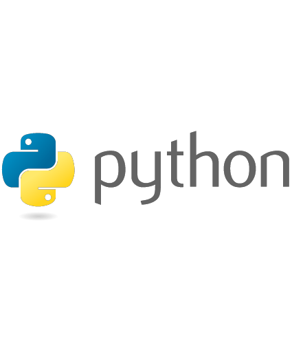
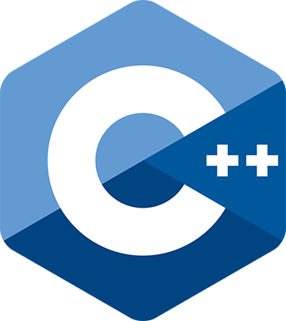

Existem muitas linguagens de programação disponíveis atualmente, cada uma com suas características e finalidades específicas. Aqui estão algumas das linguagens de programação mais populares:

Java

Java: É uma linguagem de programação orientada a objetos popular, usada principalmente para desenvolvimento de aplicativos corporativos, aplicativos Android e sistemas em larga escala. É conhecida por sua portabilidade e segurança.
Em java foram feitos projetos muito interessantes, no meu repositório, há exercícios feitos em sala de aula com o professor Cainã, há também o "JogoDeTiro", que eu estou desenvolvendo ainda! Também há exercícios que foram propostos pela plataforma da DIO.me, sobre Try Catch, Pilares da Programação Orientada a Objetos e muito mais. Confira abaixo!
Veja com detalhes os meus projetos
Respositório GitHub
Python

Python: É uma linguagem de programação de alto nível, fácil de aprender e com uma sintaxe legível. É usada em uma ampla gama de aplicações, desde desenvolvimento web e científico até automação de tarefas e inteligência artificial.
Python sofre muito bullying, muitos dizem que não é uma linguagem de programação, por conta de suas diversas bibliotecas, porém entra aqui na lista sim! Em python, os primeiros exercícios propostos foi no Google Colab, onde vimos tabelas, aprendemos a exibir dados, tirar média, mediana, moda, porém esse assunto está muito ligado a Ciência de Dados, logo, na página de Ciência de Dados, você irá encontrar mais detalhes.
JavaScript

JavaScript: É uma linguagem de programação voltada para o desenvolvimento web. É amplamente utilizada para criar interações dinâmicas em sites e aplicativos web, além de ser usada também em servidores (Node.js) e em desenvolvimento de aplicativos móveis.
Veja com detalhes os meus projetos
Respositório GitHub
C

C: É uma linguagem de programação de propósito geral e de alto desempenho. É amplamente utilizada no desenvolvimento de sistemas operacionais, jogos, software embarcado e aplicativos que exigem eficiência e controle de hardware.
A linguagem C é da família do JavaScript, não se compara, mas é como se fosse a mesma lingua com alguns sotaques, só que utilizada no Arduino, por exemplo. Na página de automação será detalhado com meus projetos feitos em linguagem C.